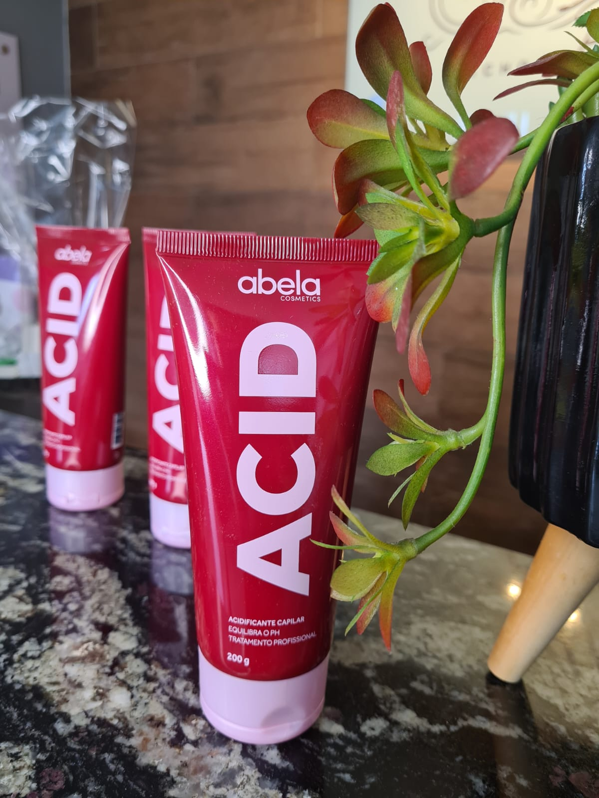
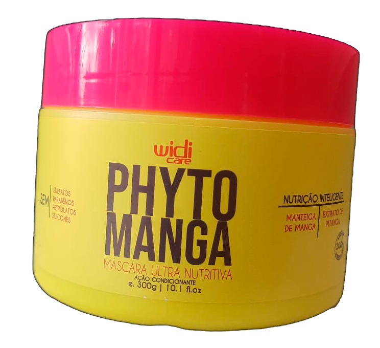
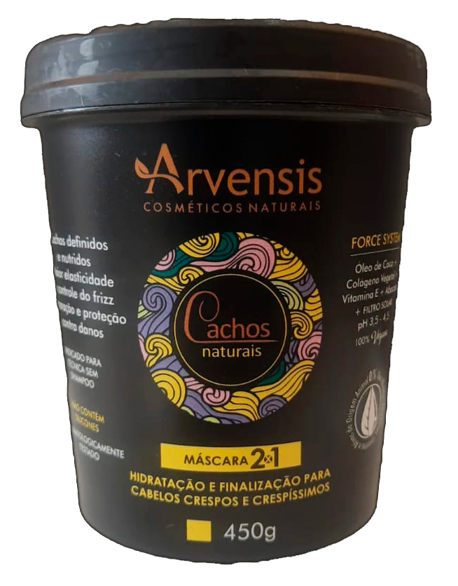
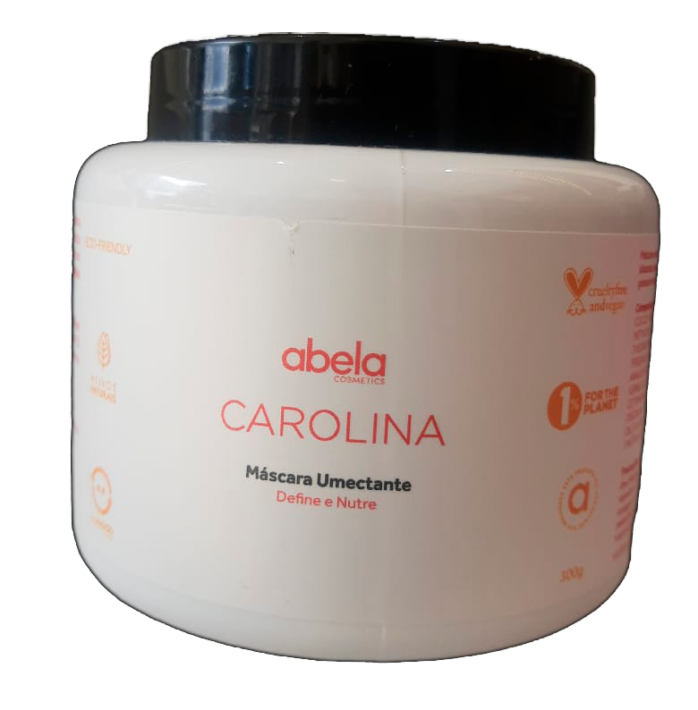
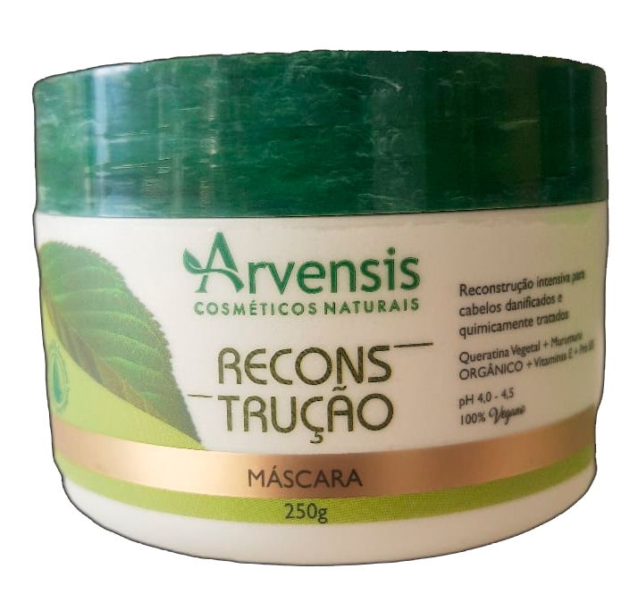

Tratamentos

Tratamento que proporciona o equilíbrio do ph dos fios. "O ph do cabelo é ácido com valor entre 4 e 5".
Alguns fatores externos podem aumentar o ph do cabelo, deixando os fios mais alcalinos e consequentemente poroso.
Processos químicos, como alisamentos, relaxamento, descoloração, cloro, poeira, sol e excesso de calor, são alguns dos fatores mais comuns que provocam o desequilíbrio do ph.
A acidificação equilibrar, e intensificar a absorção de nutrientes e vitaminas importantes para a saúde capilar.
Alinhando as cutículas capilares, deixando o cabelo com mais brilho, mais emoliente, e protegido contra agressões externas.
É indicado para todos os tipos de cabelo, independente da sua estrutura.
Quando fazer?
✓ Cabelos com dificuldade de desembaraçar
✓ Áspero
✓ Falta de brilho
✓ Rápida absorção de água (seca muito rápido)
✓ Quebra
✓ Afinamento
No salão a cada 30 dias (produto profissional).
Em casa a cada 15 dias (dependendo da necessidade do fio)
Procure um profissional que entenda sobre do assunto, para melhor te orientar.
 
Técnica de tratamento que une a hidratação e a nutrição, tornando-se um poderoso tratamento que auxilia muito quem tem cabelo seco, com mechas, coloração, e quimicamente tratado.
A hidratação devolve água, aminoácidos, e queratina.
A nutrição devolve lipídios.
É recomendado fazer uma vez na semana.
Benefícios:
✓ Brilho
✓ Reduz o frizz
✓ Fios mais fortes, sedosos, saudáveis

É uma técnica de tratamento que serve para nutrir e fortalecer os fios, repondo a oleosidade necessária, que é perdida no dia a dia. É indicado para cabelos secos(porosos).
Benefícios:
✓ Reduz a quebra
✓ Diminui o frizz
✓ Elimina os nós de fada
✓ Combate o ressecamento e a porosidade
✓ Toque mais suave
✓ Mais brilho
Técnica de tratamento realizado com água e ozônio em forma de vapor. Esse penetra nos fios deixando- os mais hidratados, macios e encorpados.
No coura cabeludo o vapor estimula a circulação sanguínea recuperando e tratando a saúde capilar.
Indicado para todos os tipos de curvatura (cabelo).
Benefícios:
✓ Combate a calvície e a queda de cabelo
✓ Combate a caspa e outras
dermatites do couro cabeludo
✓ Hidrata e recupera os fios
✓ Alinha as cutículas
✓ Rejuvenesce os fios
✓ Estimula o crescimento
✓ Diminui o frizz

Consiste em repor massa capilar, que perdemos no dia a dia , devido a exposição ao sol, químicas, temperaturas altas (chapinha, secador, babyliss), deixando mais poroso e quebradiço.
Benefícios:
Todo cabelo vai precisar
de reconstrução em algum momento.
O que vária é a necessidade e frequência.
Em cabelos naturais(virgens), o ideal é a
cada 30 dias, já cabelos com
química, mechas, coloração ou
tinturas, a cada 15 ou 20 dias.
Muita atenção!!!
Reconstrução em excesso faz
tão mal quanto
não fazer. Então cuidado
com o tempo de intervalo
entre um tratamento e outro.
Dermatites
ALOPÉCIA POR TRAÇÃO
O que é ?
Alopécia por tração é a perda de cabelo causada pela tração dos fios. Um dos maiores sintomas do problema é a formação de algumas falhas no couro cabeludo, principalmente na região das têmporas, nas áreas da franja, nuca e também atrás das orelhas.
mais
Como acontece a alopecia por tração?
A alopecia é uma condição que leva à perda de cabelo. O problema pode ser causado pela genética, mas outro fator que o desencadeia é a tração feita nos fios - seja pelo uso constante de penteados repuxados ou até pelo hábito de arrancar as madeixas devido a problemas emocionais, como o estresse, a depressão e a ansiedade. O problema costuma provocar grandes falhas na região, deixando o couro cabeludo à mostra.
Penteados apertados é o uso de megahair podem causar a alopecia por tração?
É verdade. A alopecia de tração está ligada à tração prolongada dos fios e à tensão do couro cabeludo com esse movimento. Sendo assim, aqueles penteados que são muito repuxados podem acabar gerando o problema. As falhas no cabelo acontecem devido à falta de elasticidade das fibras dos folículos pilosos, o que resulta no rompimento dos fios. O mesmo vale para as pessoas que colocam tranças, megahair ou passam longos períodos com as madeixas presas.
Como podemos tratar o problema?
Em primeiro lugar, é importante diagnosticar a alopecia de tração o mais cedo possível. Quando não conseguimos identificar o problema, a cicatrização dos folículos impede que novos fios cresçam e acaba enfraquecendo aqueles que ainda estão ali. O cenário pode piorar a queda de cabelo e deixar falhas no couro cabeludo ainda maiores. Para tratar o problema, é importante deixar que os fios relaxem e fiquem livres de qualquer tensão. Se o caso for mais grave e a doença estiver em um estágio avançado, procure um dermatologista ou terapeuta capilar.
PSORÍASE
A psoríase é uma doença crônica que atinge não apenas o couro cabeludo, mas também cotovelos e joelhos, entre outras partes do corpo. Sua causa está ligada à hereditariedade e ao sistema imunológico. Quando a psoríase se manifesta, ocorre a formação de placas avermelhadas, que descascam, de contornos bem definidos. Ao contrário do que algumas pessoas imaginam, a doença não é contagiosa.
FOLICULITE
A relação das doenças do couro cabeludo inclui a foliculite, uma inflamação nos folículos pilosos cujos principais sintomas são pele avermelhada, coceira e pequenas bolhas de pus. Em geral, a foliculite é causada pela bactéria Staphylococcus aureus (estafilococos), mas ela também pode ser de origem viral ou fúngica. A doença atinge todas as partes do corpo, exceto mucosas, palmas das mãos e plantas dos pés.
DERMATITE SEBORRÉICA
A dermatite seborreica ou seborreia é mais conhecida como caspa. Ela surge devido à mudança na produção de sebo pelas glândulas sebáceas, o que eleva a oleosidade do couro cabeludo. Por isso, a região atingida fica avermelhada, em placas ou crostas, e muitas vezes há coceira e descamação. O desequilíbrio na produção de classes de bactérias e fungos também causa a dermatite seborreica.
PITIRÍASE
A lista de doenças do couro cabeludo engloba a pitiríase, uma micose de origem fúngica. Chamada também de tínea capilar, esse tipo de infecção causa coceira e descamação, além de queda temporária do cabelo, em alguns casos. Os fungos causadores da pitiríase compõem a microbiota do couro cabeludo e são ativados devido a mudanças no pH da região, à sudorese em excesso e até mesmo ao estresse, entre outras razões.